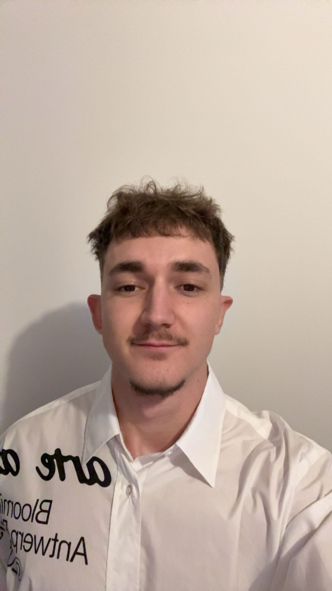

LENOIS-GELAS Nicolas
Étudiant en BTS SIO, passionné par le développement et les technologies réseau.
Télécharger mon CVPrésentation personnelle
Après plusieurs années d'expérience professionnelle enrichissantes, j'ai choisi de reprendre mes études pour me réorienter vers l'informatique, un secteur qui me passionne. Motivé, autonome et curieux, je souhaite désormais mettre à profit mes compétences et en développer de nouvelles au sein de projets innovants.
Stages
Stage – INGENICO (2018 - 2018)
Expériences Professionnelles
Gestionnaire de Parc – Rey Matériel (2024 -2025)
Gestionnaire de Parc – CarrieScopic (2023 - 2024)
Vendeur Conseil – Leroy Merlin (2023 - 2023)
Équipier & Formateur – McDonald's (2021 - 2023)
Employé Polyvalent - E.Leclerc (2021 - 2021)